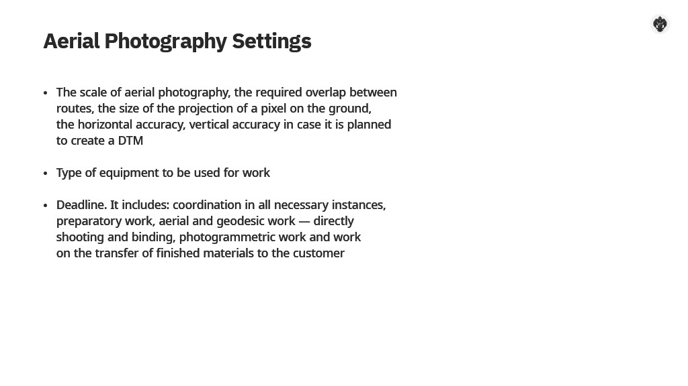
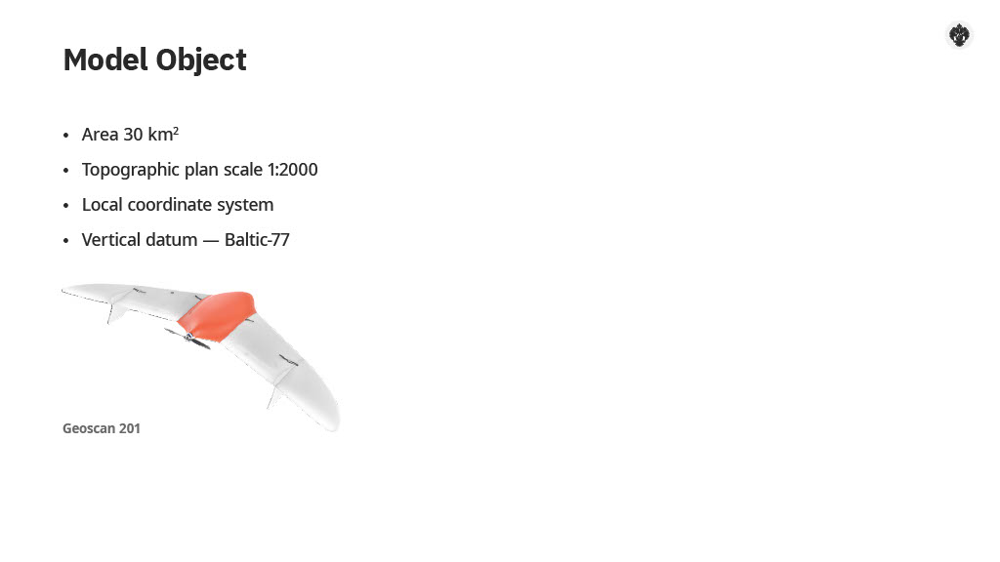
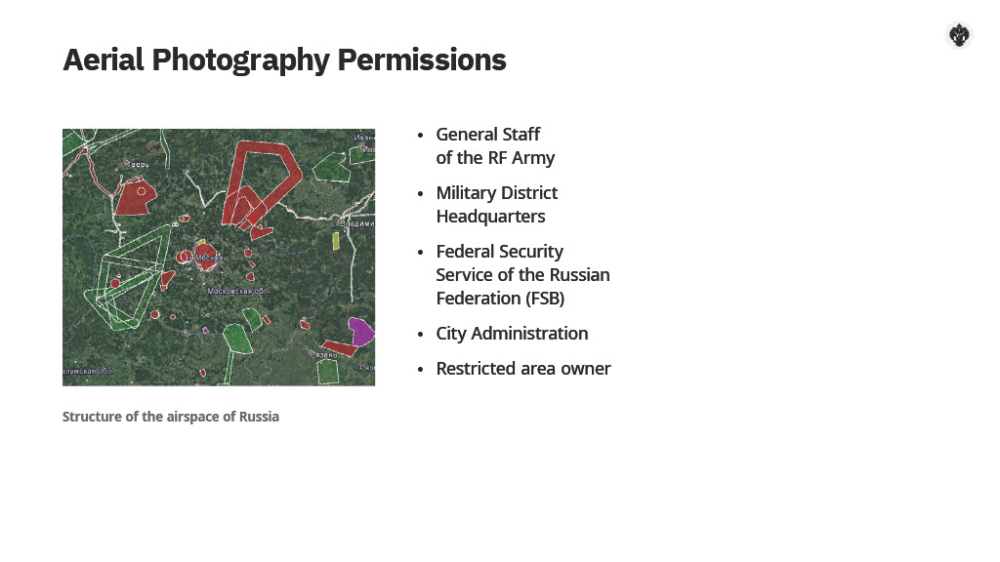
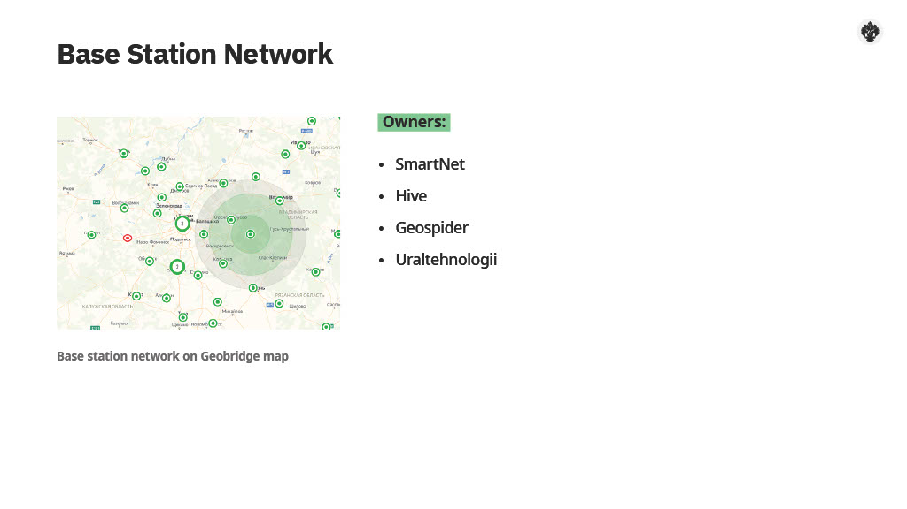
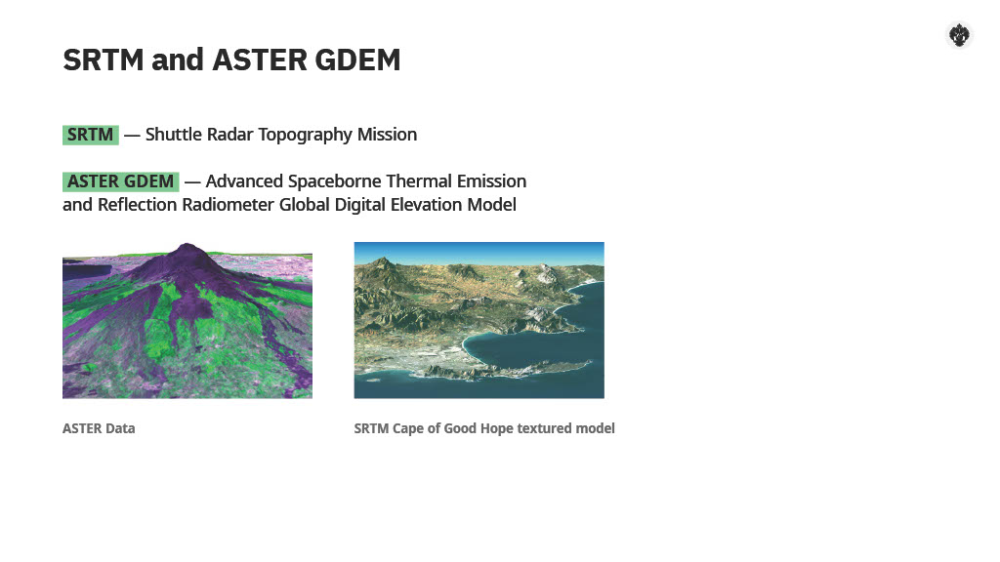
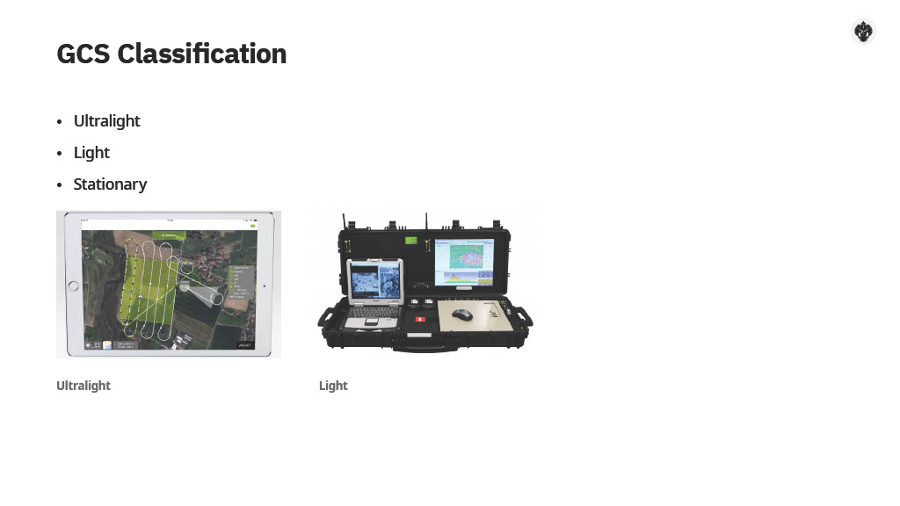
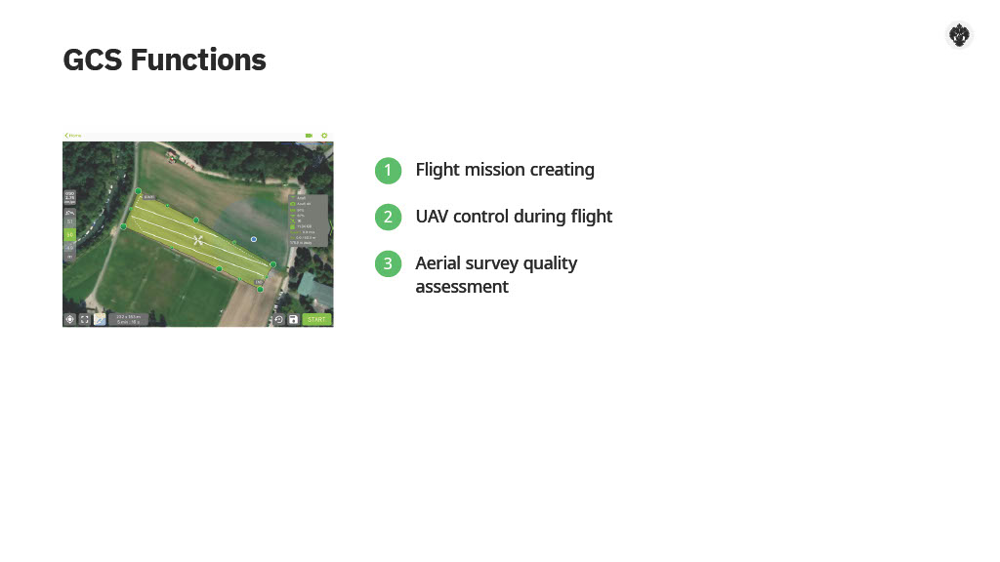
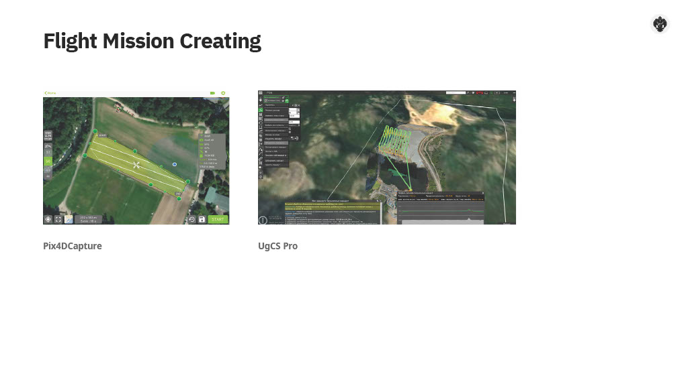
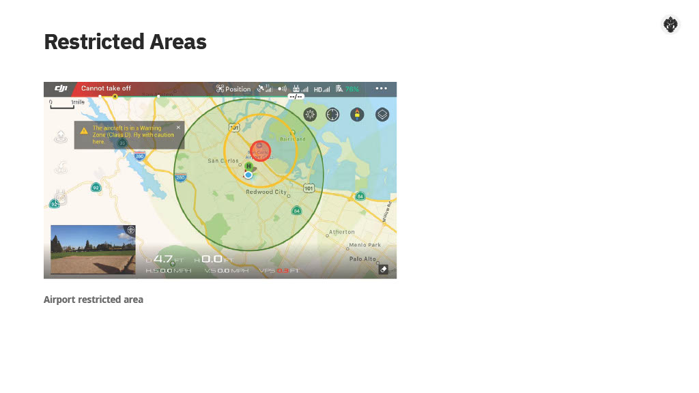
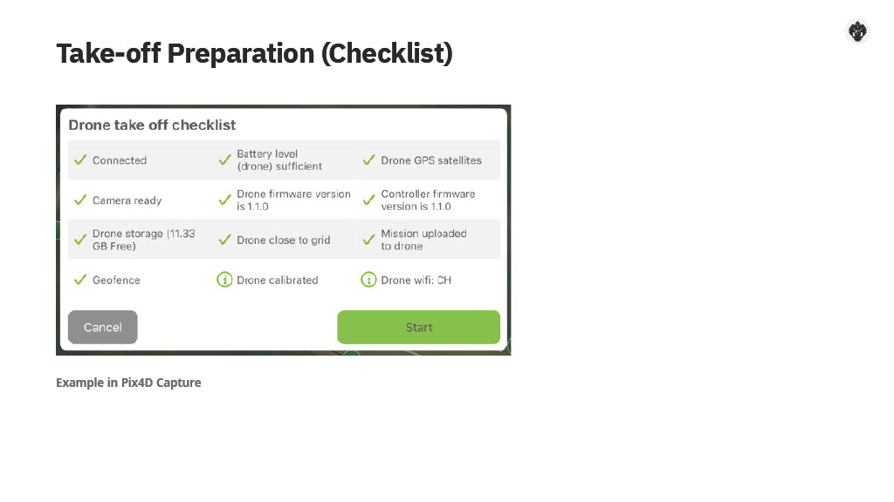

4 Aerial Photography Requirements and Reconnaissance
Now we will talk about the aerial photography requirements and reconnaissance. We will consider what requirements are presented to the AFS at the planning and implementation stage, what are the preparatory steps and what is the reconnaissance.
4.1 Types of coordinate systems

The most important aerial photography requirement is the products conformity to the specification in the Technical Task. What can be the differences imposing conditions on the equipment and methodology choice? First of all, they are scale and scope of the survey. Another important factor - the type of survey - areal or linear. Depending on the type of final product, there may also be restrictions. For example, survey for 3D-models is best done with multi-camera UAV or flying crosswise. Aerial surveys are implemented by organizations under a contract with a clear indication in the Technical Task of such parameters as: 1.The scale of aerial photography, the required overlap between routes, the size of the projection of a pixel on the ground, the horizontal accuracy, vertical accuracy in case it is planned to create a DTM. 2.Type of equipment to be used for work. 3.Deadline. It includes: coordination in all necessary instances, preparatory work, aerial and geodesic work - directly shooting and binding, photogrammetric work and the transfer of finished materials to the customer.
Let’s try to simulate the preparatory process for various tasks. First, we select Aerial Photography of the urban territory of a small city in the European part of Russia with an area of 30 km2 to create a topographic plan on a scale of 1: 2000. The coordinate system is local, the vertical datum is Baltic 77. As you can see, already in the formulation of the work object there are some parameters that we need. Now, we have to choose the technique. This is a fairly large areal object; it means that aerial photography needs to be done with fixed-wing UAV usage.
It is clear that each organization has its own production resources, but we will consider for these purposes Geoscan 201 UAV. First, we need to get all the permissions and make sure there are no restricted areas. This process is quite lengthy and can take up to a couple of months for all permissions. We discussed the flight coordination process in more detail in the second section. Let me remind you that for our model facility we will need the Permission of the General Staff, the Permission of the Headquarters of the military district, the Permission of the Federal Security Service in the region, the Permission of the city administration. The presence of restricted areas can be viewed on the website https://fpln.ru/ or by downloading a special kml containing the structure of the airspace. The easiest way to open it is Google Earth. If they are any restricted areas, aerial photography should be agreed with the owners of such zones. In the case of works near the country border - - closer than 25 km, additional permission from the FSB is required. If works are implemented near the China border, permission from the Ministry of Foreign Affairs of the Russian Federation is required. For creating orthomosaic and DEM in the required Coordinate System and Vertical datum, it is necessary to send requests to the regional offices of Rosreestr and obtain extracts of the coordinates and heights of points of the State Geodetic Network, which you will use in your work.
During the field work, it will be necessary to check the safety of the points and place the base station on functioning points. It is also useful to find out the availability of permanent base stations in the area of work and the possibility of their use. Information on the location of these stations can be found on the websites of operator companies - HIVE, SmartNet, Geospider, Uralgeotehnologii and others. There is also a convenient resource Geobridge, with which you can see on the same map the presence of base stations of almost all providers. Aerial photography should be implemented while there are no clouds below the survey height, no precipitation and the Sun height at least 20 degrees in order to avoid long shadows. Photos should not have shadows from clouds, industrial smokes and shadows from them. Also, for our task, there should be no snow cover. The favorable surveying time for central Russia is late April – early November. In accordance with the forecast conditions, we select several days on which we plan to perform aerial photography. For these days we will set a local schedule. After that, we proceed directly to the UAV flight mission creating. In the special software, depending on the UAV manufacturer, we create start point, landing point, set routes and their directions according to the survey borders. We’ll talk more about creation and flight control stations in the following videos. To create a topographic plan on a scale of 1: 2000 we must have an orthomosaic with a resolution of at least 10 cm per pixel. Usually, flight mission created so that the pixel projection size of the original image is slightly smaller. For example, 8 or 9 cm. This is done so that errors arising during the photogrammetric processing do not have a critical impact on the quality of the final product. So we have a certain margin of accuracy. Based on the pixel size requirements, the flight altitude is selected, because these values are directly related. The smaller the pixel size, the lower you need to fly. And vice versa. Long-focus lenses can come to the rescue, but they usually have large aberrations and they are heavy. Therefore, lenses with a focal length of 20 - 50 mm are used in UAV. Modern flight mission creating programs support the integration of external sources with terrain features.
Why do we need this? A large difference in elevation at the site of work must be taken into account, because the quality of images depends on this. Also, information about the terrain serves for a safer flight. The default source in programs is often SRTM or ASTER - terrain models. SRTM is Shuttle Radar Topography Mission. In 2000, the American Shuttle Endeavor with a special radar on board for 9 days surveyed 80% of the earth’s surface from 56 degrees south latitude to 60 degrees north latitude. A height model with 30 meters resolution is available. The total error of this model is about 15m on average. ASTER Global Digital Elevation Model is a Japanese project similar to SRTM. It uses more advanced equipment with a large coverage of the Earth. Software developers usually add or synthesize both models to achieve the best coverage and accuracy. By using such models, collisions between UAVs and high-altitude objects such as chimneys of factories can be avoided. However, models are quite old. That is why some objects may not be on them. This is especially true for mobile towers, high-rise buildings and new chimneys. Therefore, it is advisable to look at the most recent satellite image of the territory before creating a flight mission. Some programs also support downloading DEM from other sources. For example, you can perform an approximate aerial survey of a quarry or a site, get a model with errors in height of no more than half a meter, and design an accurate aerial photograph already on it. This is especially important in case of a complex terrain. For example, in a quarry or in a kimberlite pipe, where the elevation differences reach 500 meters. Or if we are performing survey of a building in the surrounding area with further 3D-modeling Ground control station programs implement automatic tack building algorithms based on specified conditions - - height, overlap, image resolution, maximum equipment runtime. Routes are designed in the optimal direction with the return of the UAV to the starting point or to any other. It is important to note that it is better to design route so that the border lines were outside of the work area. This is done in order to avoid the lack of information behind tall buildings and for better further photogrammetric processing. At the field work stage, during the take-off preparation, the flight mission will be loaded into the UAV autopilot. After we have built the flight mission, we will choose the locations of the GCPs Since we have an urban territory, our task is greatly facilitated. We will use the corners of the road marking as GCPs. In its absence, the use of well covers is possible. Geoscan 201 is equipped with a GNSS receiver so, we will only need GCPs for accuracy control. If you are surveying forests, fields, linear objects, GCPs should be prepared and fixed in advance. Well, we have all the permissions, the coordinates of the SGS points, we created a flight mission taking into account the terrain features, and selected GCPs places. The preparatory phase is over. After that, on the day of the local schedule, they begin to fly. Geodetic work is usually done a little earlier. After the flights the aerial photography field control are implemented. To do this, all the resulting photographs are reviewed. The presence of badges, low-quality photos with greases, shadows and so on are found out. After the review, a conclusion is drawn on the suitability of aerial photography materials for further photogrammetric processing.4.2 Ground Control Station Introduction

Now, we will get acquainted with the ground control station, consider what it consists of and what functions it performs. The ground control station or GCS is intended for controlling UAV, receiving telemetry, viewing and recording a video signal in real time. GCS is a hardware-software complex, which may be a telephone or a tablet as well as a whole cabin of military airborne systems. Next, we consider the classification of GCSs and its composition. There is no single classification, however, all GCSs can be divided by degree of mobility: 1.Ultralight - these are GCSs in which remote controller is used in the combination (but this is not necessary) with a smartphone or tablet, and with the special software downloaded from the Android or iOS application store. Most often, such GCSs are used for consumer UAVs. For example, DJI drones. UAV comes with a remote controller included. UAV can be controlled using only this controller. Flights are implemented visually. Less often remote control has small screens on which telemetry is displayed. The smartphone greatly expands UAV management capabilities. On the screen you can see the position of the drone on the map, broadcast the video stream from the camera, flight characteristics, battery voltage, the number of satellites and other information. Also, in programs like DJI Go, Drone Deploy, Pix4DCapture special flight modes are implemented. Such as automatic flight according to the created flight mission, ActiveTrack tracking modes. In this mode, the quadcopter, using the capabilities of computer vision, follows the specified object, if the object is moving. This is very convenient if you are photographing a moving subject, such as a cyclist or a running person. 2. Light. Here we include a laptop-based GCSs. Usually these are more complex and much more functional applications. Most often, such GSCs are equipped with external radio antennas, which allow you to maintain communication with UAV at distances up to 30-70 km. In such GCSs, there is almost always no direct manual control from the remote controller. They are more intended for automatic flight. Manual control works on the principle of clicking the point where to fly, the so-called TapToGo. In the industrial segment, each manufacturer writes its own software for specific UAV models. For example, Geoscan Planner. In such programs more complex flight task creation mechanisms are implemented. For example, various starting and landing points, For example, various starting and landing points, flying around the point of interest, changing the areal and linear survey in one flight, working with different types of payload, saving detailed flight logs. 3. Stationary. These are mainly military systems on ships, another aircraft, vehicles and military bases. They are a complete flight control center with a complex of radio navigation or satellite equipment that allows controlling the flight of military vehicles at distances of several thousand kilometers.
 GCSs can be divided into complexes with the possibility of creating an automatic flight mission and hand controllers. Usually, remote controllers used in toys, model aircrafts and consumer devices. We will not talk about remote controllers further, because to perform aerial photography, an automatic flight along the designed route lines is required.
GCSs can be divided into complexes with the possibility of creating an automatic flight mission and hand controllers. Usually, remote controllers used in toys, model aircrafts and consumer devices. We will not talk about remote controllers further, because to perform aerial photography, an automatic flight along the designed route lines is required.

Let’s consider the GCS functions in aerial photography systems: 1.Flight mission creating 2.UAV control during flight 3.Aerial survey quality assessment Creating a flight mission is the main stage of preparatory work. The flight mission is a set of commands performed by the autonomous pilot of the UAV during the flight. This includes climb, entering the route, holding the UAV on the route, triggering the camera shutter at the calculated time, returning to the landing point and the landing process itself - - with the release of a parachute in the case of a fixed-wing UAV. The developers of modern programs try to make them as user-friendly as possible. All flight parameters are calculated automatically, the user usually selects the pixel size or flight altitude and indicates the area for which it is necessary to perform aerial photography.

Later we will look at one of such simple systems for controlling DJI quadcopters - Pix4DCapture. Using it as an example, you’ll see how it is easy to create a flight mission. However, not all programs are like this - - some provide maximum functionality, but require a deeper understanding of the flight processes and the technical features of the launched UAV.Creating process: On the screen of the device - a computer or smartphone, you see a map of the area or a satellite image. Borders in vector form are loaded through import tools. After reconnaissance, you should have some idea of the points at which the take-off and landing of the UAV takes place. Then, using the photogrammetry or photography tools (each program has different names), tap on the screen or click the mouse to show the borders of aerial photography, show the starting and landing points. In the flight mission parameters, the survey characteristics are set - - flight directions, altitudes, photogrammetric overlap. The program automatically adjusts the route lines to your needs and may even offer to perform optimization in order to reduce flight time. As soon as you achieve an acceptable result for your tasks, this mission can be saved as a separate file, or downloaded via wireless communication into connected UAV. Some programs on smartphones are so simple that the procedure for creating a flight task can be performed in the field a few minutes before take-off. Besides using a map or satellite image in more professional programs, the height model or an orthomosaic can be uploaded - - we talked about this earlier.

In DJI programs, no-fly zones are usually set near airports and helipads; there are also yellow zones in which flight is possible only after user authentication. These mechanisms are aimed to improve flight safety, because DJI devices are easy-to-use for unprepared external pilots. In complex programs, most often there are no restrictions, because sometimes it is necessary to survey near airports, and often in airports themselves. It is assumed that users of industrial airborne equipment are more prepared and knowledgeable and will not violate established procedures for the use of airspace.
During the UAV take-off preparation, all the calibrations are displayed in the GCS - - the operability of the navigation system, the presence of electricity on all elements of the UAV, the functioning of the camera, and others. Also, at the time of the prelaunch, the flight mission is loaded into the memory of the UAV autopilot. After the launch, the autopilot transmits to the GCS information about its position, speed, number of satellites, battery voltage, and so on through the communication system. After entering the route, the user is notified about the camera shutter work by a sound signal. In some systems, it is possible to immediately see the pictures from the flash memory of the drive on the UAV. During the flight, user can stop the mission. Change it or send a new task via radio. There is also the possibility of switching to manual mode if there is a remote controller or semi-manual mode. The GCS warns user about critical situations. They can be a sudden strong wind and high roll of the UAV, a problem with satellites, an abrupt drop in voltage on the batteries In the absence of a response from user, the system may decide to return the UAV to the starting point or, if such a return is not possible, or land the UAV. In case of a successful return to the landing point after the mission, it is possible to verify the performance and quality of aerial photography in GCS. In addition to the standard photo review it can use quick block editing for this. This procedure is designed to ensure that there are no unregistered territories and missing photos. To do this, the obtained images are projected onto the terrain. Empty spaces can be painted red.
The system can also check the quality of the GNSS signal during the flight - the absence of time intervals with an insufficient number of satellites. These procedures are aiming to help the user in assessing the quality of the survey and to save time, if it is needed to perform the survey again without going home and the redeployment of the UAV.
In conclusion, we learned the purpose, classification, and main functions of the Ground Control Stations. Further, we will get acquainted in details with three different representatives. This is the Geoscan Planner software - - an example of specialized software for industrial UAVs, the UgCS Pro software - this program allows you to control DJIs and some other manufacturers. It presents a very wide functionality. And we conclude this section with an introduction to the Pix4DCapture software — an example of easy-to-learn, free program managing UAVs manufactured by DJI.